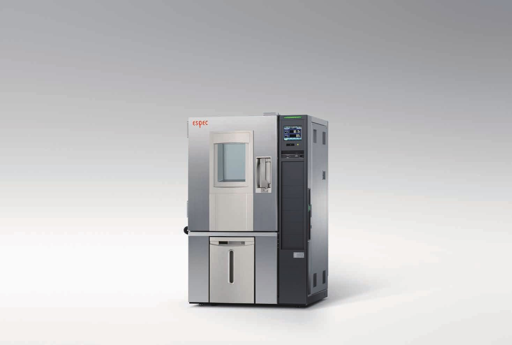
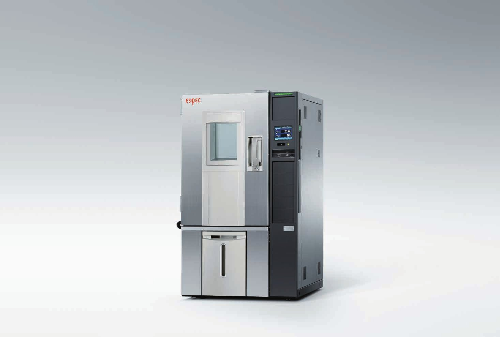
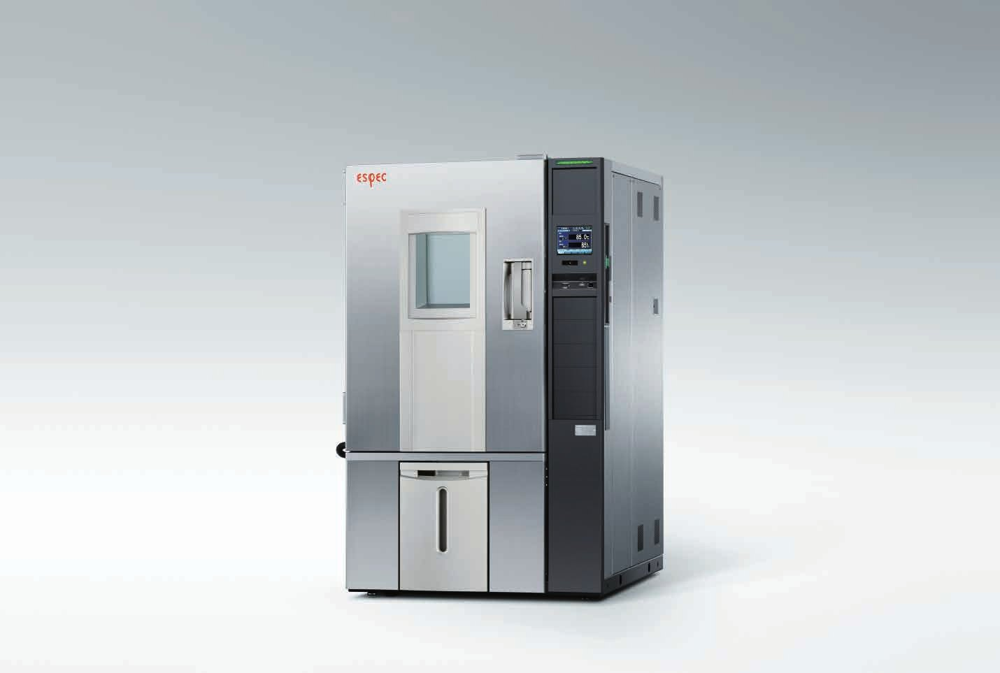
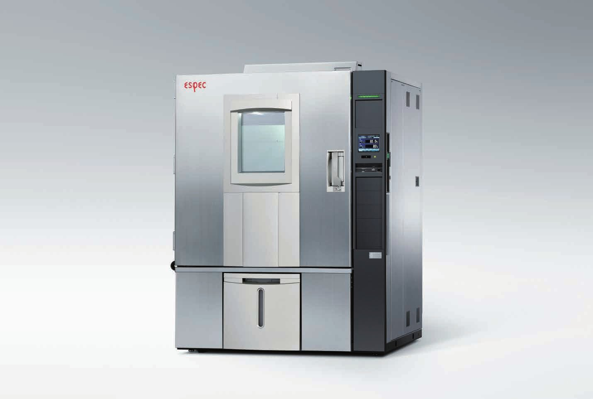

Platinous J Series
Platinous J 항온항습기
온도와 습도를 함께 걸어 신뢰성을 확인하는 ESPEC 대표 시리즈입니다.

장비 개요
다양한 신뢰성 시험에 쓰는 ESPEC 항온항습기의 대표 시리즈입니다. 시험 목적에 맞춰 모델을 고를 수 있습니다.
저온에서 고온, 저습에서 고습까지 조건을 바꿔 가며 제품의 변화를 확인합니다. 보관 시험, 성능 평가, 배터리 충방전처럼 오래 돌리는 시험까지 맡습니다. 반도체, 전기·전자, 배터리, 자동차 분야에서 쓰입니다.
제이에스 엔지니어링은 1981년부터 ESPEC 한국 총대리점으로 설치, 교정, 유지보수를 책임집니다.
온습도 범위
옵션으로 +150 / +180°C까지 넓힐 수 있고(모델별로 다름), 요청 시 최대 200°C입니다.
모델별 사양
| 구분 / 모델 | 온도 범위 | 습도 | 내용적 |
|---|---|---|---|
| 항온항습기PR-1J / 2J / 3J / 4J | -20 ~ +100°C | 20 ~ 98%rh | 120L / 225L / 408L / 800L |
| 초에너지절약 저온 항온항습기 (신규)PL-2J-ECO / 3J-ECO / 4J-ECO | -40 ~ +100°C | 20 ~ 98%rh | [확인 필요] |
| 저온 항온항습기PL-1J ~ PL-4J | -40 ~ +100°C | 20 ~ 98%rh | [확인 필요] |
| 초저온 항온항습기PSL-2J / PSL-4J | -70 ~ +100°C | 20 ~ 98%rh | 306L / 800L |
| 고온 항온항습기PHP-2J / 3J / 4J | 주위온도 +10 ~ +100°C | 40 ~ 98%rh | 219L / 398L / 784L |
| 저습형PDR-3J / 4J, PDL-3J / 4J | PDR -20 ~ +100°C PDL -40 ~ +100°C | 5 ~ 98%rh | 408L / 800L |
| 클린 항온항습기PCR-3J (클린도 Class5, HEPA 필터) | -20 ~ +100°C | 30 ~ 90%rh | 312L |
| 항온기 (습도 없음)PU-1J~4J, PU-ECO, PG-2J/4J | PU -40 ~ +100°C PG -70 ~ +100°C | - | 120 ~ 800L |
외형 치수와 전원 사양은 [확인 필요]. 출처: ESPEC 공식 제품 페이지 (영문, 새 창), 카탈로그 CAT.NO.E15110-Q2504.
특징
ECO형은 전기를 덜 씁니다
0°C 이하 운전에서 표준 J 시리즈보다 최대 70% 에너지 절감(PL-4J-ECO 기준). 배터리 충방전, 보관처럼 오래 도는 시험에 맞습니다.
낮은 GWP 냉매를 고를 수 있습니다
R-449A는 GWP가 R-404A의 3920에서 1397로 줄어듭니다. 요청 시 선택.
Smart R&D System
냉각과 가열 능력을 필요한 만큼만 제어해 온도와 습도를 정밀하게 맞춥니다.
2025·2012 굿디자인상
ECO형은 2025년, Platinous J는 2012년 수상. 일본 기계진흥협회 에너지 절약 기계 수상 표시도 있습니다.
모델별 사진




사진 출처: ESPEC Corp. 제품 카탈로그. [확인 필요] 각 사진의 정확한 모델명.